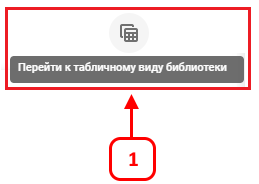
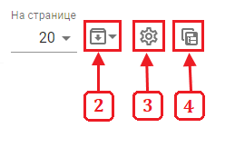
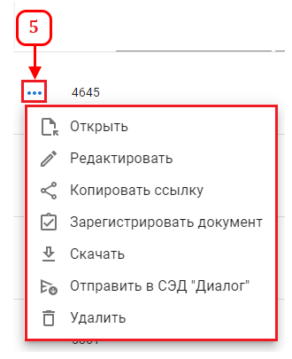
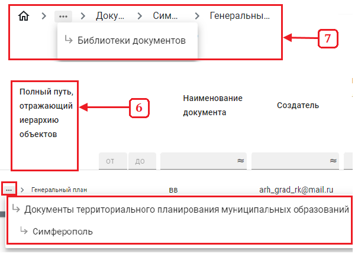

Библиотека документов
Реестр документов
Реестр документов показывает библиотеку документов в табличном виде. Табличный вид нужен для систематизированного просмотра данных и их параметров.
Нажмите на кнопку (1), чтобы открыть реестр.


Нажмите (5) чтобы открыть меню управления документом.

Колонка «Полный пуь» (6) отображает путь до элемента. При наведении на "..." открывается полный путь.
Так же путь отображается вверху страницы (7).

Нажмите на элемент пути чтобы перейти к нему.